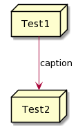
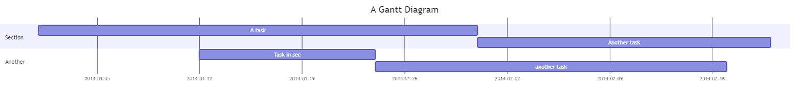

Adding VSCode support for diagrams with Kroki

The kroki extension supports a wide range of diagrams from BPMN to Graphviz to PlantUML and Vega graphs using kroki and asciidoctor-kroki.
You can see the full range and examples on the official website.
The AsciiDoc extension for Visual Studio Code (see Recommended Visual Studio Code Extensions) comes with the ability to include Kroki diagrams. However, it is deactivated by default and must be configured before first use.
This requires a diagram server. There are multiple options:
-
Use the public kroki.io server
-
Deploy your own server
-
Run a kroki docker container on your local machine
We will go with option 1.
| This extension will send graph information to https://kroki.io. If this is an issue, it is also possible to use your own kroki instance (see here for more information). |
To enable diagram support, set the use_kroki parameter in your User Settings to true.
-
Open the Command Pallette (Ctrl+Shift+P)
-
Type "user settings" and confirm with Enter
-
Search for "kroki" in the user settings and enable the "Use_kroki" checkbox
Caching diagrams locally
| This is a per-file setting and must be done in each applicable AsciiDoc file. |
By default, diagrams are not saved locally. To cache and save diagrams locally, set the kroki-fetch-diagram attribute in your document header:
= My amazing document :kroki-fetch-diagram:
This will store images by default in your document folder.
However, you may also set imagesdir to store them elsewhere:
= My amazing document :kroki-fetch-diagram: :imagesdir: images
| In the example above, the images are now stored in a folder named "images". |
The images are served over http:// and you must allow your preview to include data from unsafe sources. To do this:
-
Open the Command Pallette (Ctrl+Shift+P)
-
Enter
asciidoc preview security. -
Choose
Allow insecure content.
| Access to this global setting is only available if you have currently are in an AsciiDoc file in VSCode. Otherwise, the setting will not show up. |
Testing kroki examples
With the settings done and caching activated, you can test Kroki with the following examples:
| Type | Code | Result |
|---|---|---|
PlantUML |
|

|
Gantt Diagram |
[mermaid]
....
gantt
title A Gantt Diagram
dateFormat YYYY-MM-DD
section Section
A task :a1, 2014-01-01, 30d
Another task :after a1, 20d
section Another
Task in sec :2014-01-12, 12d
another task :24d
....
|

|
Pie Diagram |
[mermaid]
....
pie title Pets adopted by volunteers
"Dogs" : 386
"Cats" : 85
"Rats" : 15
....
|